<!DOCTYPE HTML PUBLIC "-//W3C//DTD HTML 3.2//EN">
<HTML>
<HEAD>
	<META HTTP-EQUIV="CONTENT-TYPE" CONTENT="text/html; charset=iso-8859-1">
	<TITLE></TITLE>
	<META NAME="GENERATOR" CONTENT="StarOffice/5.2 (Linux)">
	<META NAME="AUTHOR" CONTENT="b a">
	<META NAME="CREATED" CONTENT="19951121;17410000">
	<META NAME="CHANGEDBY" CONTENT="Jaideep Ray">
	<META NAME="CHANGED" CONTENT="20001221;454000">
</HEAD>
<BODY bgcolor="white">
<P ALIGN=CENTER><FONT FACE="Helvetica, sans-serif"><FONT ><I><B>The
CCA Core Specification In A Distributed Memory SPMD Framework</B></I></FONT></FONT></P>
<P ALIGN=JUSTIFY><BR><BR>
</P>
<P ALIGN=CENTER><FONT >Benjamin A. Allan, Robert C.
Armstrong<A CLASS="sdfootnoteanc" NAME="sdfootnote1anc" HREF="total5_8.html#sdfootnote1sym"><SUP>1</SUP></A>,
Alicia P. Wolfe, Jaideep Ray</FONT></P>
<P ALIGN=CENTER><FONT >Sandia National Laboratories, Livermore
California, {baallan,rob,apwolfe,jairay}@ca.sandia.gov</FONT></P>
<P ALIGN=CENTER><BR><BR>
</P>
<P ALIGN=CENTER><FONT >David E. Bernholdt and James A. Kohl</FONT></P>
<P ALIGN=CENTER><FONT >Oak Ridge National Laboratories, Oak Ridge
Tennessee {berholdtde,kohlja}@ornl.gov</FONT></P>
<UL>
	<LI><H1 ALIGN=JUSTIFY><FONT FACE="Helvetica, sans-serif"><FONT >Abstract</FONT></FONT></H1>
</UL>
<P ALIGN=LEFT><FONT >We present an overview of the CCA core
specification and CCAFFEINE, a Sandia National Laboratories framework
implementation compliant with the draft specification. CCAFFEINE
stands for CCA Fast Framework Example In Need of Everything; that is,
CCAFFEINE is fast, lightweight, and it aims to provide every
&quot;framework service&quot; by using external, portable components
instead of integrating all services into a single, heavy framework
core. By fast, we mean  that the CCAFFEINE glue does not get between
components in a way that slows down their interactions. </FONT>
</P>
<P ALIGN=LEFT><FONT >We present the CCAFFEINE solutions to
several fundamental problems in the application of component software
approaches to the construction of SPMD applications. We demonstrate
the integration of components from three organizations, two within
Sandia and one at Oak Ridge National Lab. We outline some
requirements for key enabling facilities needed for a successful
component approach to SPMD application building.</FONT></P>
<P ALIGN=LEFT><BR><BR>
</P>
<P ALIGN=LEFT><FONT ><I>Keywords</I> : Common Component
Architecture, high performance computing, CCAFFEINE, peer components,
SPMD, framework.</FONT></P>

	<H1 ALIGN=JUSTIFY><FONT FACE="Helvetica, sans-serif"><FONT >1.
	Introduction: Peer Components In The SPMD World</FONT></FONT></H1>
	<UL>
		<LI><H2 ALIGN=JUSTIFY><FONT FACE="Helvetica, sans-serif"><FONT ><I>1.1
		Background</I></FONT></FONT></H2></LI>
	</UL>

<P ALIGN=LEFT><FONT >Currently, the dominant means for <FONT >writing</FONT>
HPC programs is to create a &quot;hero&quot; code, where all of the
numerical and domain-specific algorithms are hand tooled into a
single monolithic application which also includes many generic
support routines.  Usually one or possibly a few people are active
contributors to the code, and they are the only ones intimately
familiar with that code.  This state of affairs has the effect of
limiting the size and scope of parallel simulations to what a handful
of people can produce.  Although parallel machines are almost
commonplace, thanks to the advent of usable cluster technology, the
ability to take advantage of them is limited largely to
embarrassingly parallel (EP) implementations.  The most widespread
examples are parallel web servers and especially search engine
clusters.  </FONT>
</P>
<P ALIGN=LEFT><FONT >Currently, separate HPC codes recreate and
debug the same parallel algorithms from scratch.  Also, the operation
and maintainence of the code relies on the knowledge contained in the
minds of just a few individuals.  The open source movement has been
startlingly successful at pulling together programmers from disparate
fields and locales to work on a single highly complex piece of code.
Although this movement had its beginnings in the very university and
scientific marketplace that also developed with HPC, one cannot
imagine how an open source approach could be used to create a complex
HPC application using today's practices in parallel programming. 
Parallel HPC is still the province of a few &quot;hero&quot;
programmers willing to take responsibility for everything that occurs
within the application.</FONT></P>
<P ALIGN=LEFT><FONT >We propose that the solution is to adopt
modularization, i.e. componentization.  There are a host of examples
for this in the commercial world. There are examples of programs in
the scientific domain that exhibit wide-spread cooperation on a
single code system: AVS, Matlab, netlib, [1-3] and
a host of other largely serial scientific subroutine libraries. 
These have contributions from a wide community of researchers in
their respective fields.  However, parallel computing has
characteristics that resist the modularization which makes
wide-spread cooperation possible. </FONT>
</P>
<P ALIGN=LEFT><FONT >By definition, data shared by components
must be spread across multiple processors to which all components
must have access. Second,  the mechanism for connecting components
together must preserve performance and be free from the insulating
glue layers common in commercial frameworks and component systems. 
The latter is the most difficult to overcome.  Each component must be
aware that the per-processor decomposition of the data exists and
must conform its particular computation to that decomposition.
Redecomposing the data to suit each component will degrade
performance prohibitively.</FONT></P>
<P ALIGN=LEFT><FONT >There are a number of parallel scientific
software frameworks that seek to overcome these problems.  POOMA,
Sierra, Overture, HYPRE, GrACE, PetSC, and Uintah [4-12] are all
frameworks for parallel computing that provide a system to automate
parallel computations restricted to a particular scientific or
numerical domain.  POOMA, HYPRE, and PetSC provide a data model for
the processor decomposition, allowing for user initialization and
access to that data and providing primitives in the form of function
calls or language constructs to create a parallel program.   In each
case these frameworks provide primitives at the top layer that will
invoke labor saving machinery underneath to get the parallel work
done transparently.  </FONT>
</P>
<P ALIGN=LEFT><FONT >Grace [9,10] and Uintah [12] are probably
the closest to the work described here.  Grace, has no underlying
component model but does not preclude it.  It provides a data model
and an interface for other code modules to use.  How the work is
synchronized and otherwise orchestrated is up to the user.  It does
not attempt to provide numerical primitives beyond that which its
structured mesh data model provides.  Uintah is the most similar to
the framework we present here named CCAFFEINE.  It shares with
CCAFFEINE the idea of single component multiple data (SCMD) style of
parallel computing, exploiting a peer component model.   This is not
by accident since both strive to be compliant with the emerging
Common Component Architecture standard [13].  Generally, Uintah seeks
to be a more heavyweight framework that provides many services in
support of its components.  CCAT [14] is another CCA compliant
framework focussing on distributed object style computing in a HPC
context.  Though its domain of applicability, Internet-style
distributed computing, is orthogonal to the work presented here, the
CCAT design has a lightweight CCA-compliant framework implementing
the provided services with (sometimes rather heavy) components.  </FONT>
</P>
<P ALIGN=LEFT><FONT >In this paper we will present explorations
with concepts in object-oriented peer components for parallel
computing using the Common Component Architecture standard.  Although
the POOMA and OVERTURE frameworks for parallel computing are
object-oriented, they are not based on peer components.  In the peer
component model, components are viewed as equal participants rather
than as elements in an inheritance hierarchy.  This peer approach is
familiar in commercially available component systems and has become
hugely successful in that arena.  Visual Basic, Java Beans, the CORBA
Component Model, and to a lesser extent, Enterprise Java Beans (now
renamed to EE2J) [15-18] all are examples of this approach.  In
particular, Java Beans is a good example because it requires almost
no supporting infrastructure, just a component specification for
attaching one bean to another.  Arguably, the feature that all these
component models share that has lead to their success, is the ease
with which more components can be added: their <I>extensibility</I>. </FONT>
</P>
<P ALIGN=LEFT><FONT >CCAFFEINE consists of less than 200 lines
of code for just the component-connecting glue logic of the
framework.  This framework, along with some additional code for
parameter setting, is all that is necessary to link components
together and bring them into a executable state.  As mentioned, there
is missing functionality that the more heavy-weight system approaches
provide, and this must be made up by specialized components. 
Admittedly, this approach is much less automatic than the system
approaches mentioned above.  The hope is, however, that what it lacks
in built-in features, it makes up for in extensibility.</FONT></P>

  <UL>
	<LI><H2 ALIGN=JUSTIFY><FONT FACE="Helvetica, sans-serif"><FONT ><I>1.2.
	Common Component Architecture (CCA) Specification and Mechanisms</I></FONT></FONT></H2>
  </UL>
<P ALIGN=LEFT><FONT >This is a brief overview of the component
model and composition mechanisms which the CCA specification
provides. Our intention is to provide enough information about the
CCA specification to describe how CCAFFEINE, our CCA compliant
framework, uses it  to compose SPMD applications from components.
SPMD parallel computing is arguably the most widely used pattern in
HPC. Being able to compose SPMD applications from CCA components is a
sizable reason for the existence of the CCA, and it is the sole
reason for creating CCAFFEINE.  The specification consists of two
parts:</FONT></P>
<OL>
	<P ALIGN=LEFT></P>
	<LI><P ALIGN=LEFT><FONT >the core specification, which allows
	an abstract interface presented by one component to be used by
	another, and </FONT>
	</P>
	<LI><P ALIGN=LEFT><FONT >standard <EM>ports, </EM>standard
	interface specifications that are exported to components from a CCA
	compliant framework or other components.  </FONT>
	</P>
</OL>
<P ALIGN=LEFT><FONT >As of this writing, only the core
specification has been approved [19].</FONT></P>
<P ALIGN=JUSTIFY><FONT >There are two primary CCA specification
features that are relevant to this work<FONT FACE="Times, serif">:</FONT></FONT></P>
<UL>
	<LI><P ALIGN=LEFT><FONT >The Uses/Provides connection design
	pattern that allows one component to invoke another component's
	methods.</FONT></P>
	<LI><P ALIGN=LEFT><FONT >The CCA Component interface that
	requires only a <EM>single</EM> method be added to an existing
	object class to make it a CCA component.  </FONT>
	</P>
</UL>
<P ALIGN=LEFT><FONT >In comparison to other component models
and systems, the CCA architecture is lightweight and simple to use. 
It is normally viewed as an add-on to existing parallel software,
bringing a measure of interoperability to otherwise monolithic HPC
codes.   It is hoped that the small &quot;surface area&quot;, the
single interface and  its member function constituting the component
model, will make the CCA standard attractive for scientists and
engineers to use for new parallel codes as well. The CCA mechanisms
can also be used to bridge between compliant HPC components and more
familiar component systems, such as Java Beans or the new CORBA
Component Model.  </FONT>
</P>
<P ALIGN=LEFT><FONT >Most importantly, the CCA specification
allows the preservation of performance.  While the CCA interface
exchange mechanism admits interfaces (Ports) that are proxies for
remote objects, its default CCAFFEINE behavior is to move interfaces
directly from one object to another.  This makes the latency overhead
for using components equivalent to one virtual function call when
using C++.  The specification avoids dictating anything about
communication to processes outside the current address space (i.e.
outside the current process) in which the component is instantiated. 
This gives the widest possible latitude to the developer of an HPC
component in selecting the message-passing, shared memory and other
communication mechanisms required by the algorithms being
encapsulated.  </FONT>
</P>
<P ALIGN=LEFT><FONT >Figure 1 illustrates the CCA mechanism for
connecting two peer components together using the Provides/Uses
design pattern.  A framework-generated Services object, encapsulating
framework services, is given to each component immediately after
instantiation (the green Service box inside each blue component).   </FONT>
</P>
<OL>
	<LI><P ALIGN=LEFT><FONT >The components add interfaces (Ports)
	they are going to export to the outside world to the Services
	object.</FONT></P>
	<LI><P ALIGN=LEFT><FONT > Each component also registers, with
	the Services object,  ports that it will need.    </FONT>
	</P>
	<LI><P ALIGN=LEFT><FONT > The user framing the application
	then causes the framework to &quot;connect&quot; the two components
	resulting in the provided port being transferred to the second using
	component's Services object.  </FONT>
	</P>
	<LI><P ALIGN=LEFT><FONT > The second component then uses its
	Services object to retrieve the port provided by the first.  The
	retrieved port is now available for use by the second component
	(Component 2).</FONT></P>
</OL>
<DL>
	<DT><FONT >Currently the CCA specification is not concerned
	with computer language interoperability.  A separate HPC interface
	definition language called Scientific Interface Definition Language,
	or SIDL [20,21] is being developed and this is expected to provide
	language interoperability for CCA ports. Since the CCA specification
	is defined only in terms of interfaces, it is expected to be
	expressed entirely in terms of SIDL when the appropriate bindings
	are complete (see [19] for examples).  In this section, we have not
	addressed the details of how an HPC parallel application can be
	composed out of CCA components and how the same CCA core
	specification can be used to link an application with more
	loosely-coupled distributed objects - these can be found in a
	previous paper that deals with just the specification itself [13].  </FONT>
</DL>
<UL>
		<LI><H2 ALIGN=JUSTIFY><FONT FACE="Helvetica, sans-serif"><FONT ><I>1.3.
		Single Program Multiple Data Components</I></FONT></FONT></H2>
</UL>
<P ALIGN=LEFT><FONT >The <STRONG><U>s</U></STRONG>ingle <STRONG><U>p</U></STRONG>rogram
<STRONG><U>m</U></STRONG>ultiple <STRONG><U>d</U></STRONG>ata (SPMD)
pattern of parallel computing is certainly the paradigm of choice for
high-performance computing.  This can be defined as a single
identical program for each participating process, where the data
acted upon by that program  varies across the processes.  Here we
make a trivial extension to that pattern and sub-divide the program
into <EM>peer components</EM>. Each peer CCA Component instance is
representable by a single local memory pointer. A peer component
communicates via Ports with other components in the same address
space and communicates via a process-to-process protocol (e.g. MPI)
within its <I>cohort, </I>the SCMD (Single Component Multiple Data)
set of corresponding components on all P processors. We assume that
there are no Port connections or messages passed between different
components instantiated on different processors, that is no diagonal
lines are allowed in Figure 2.</FONT></P>
<P ALIGN=LEFT><FONT >In the next section we describe how
CCAFFEINE, our CCA-compliant framework composes SPMD applications
from components. The ability to compose such HPC applications is a
major reason for the existence of CCA and the sole one for CCAFFEINE.</FONT></P>

  <H1 ALIGN=JUSTIFY><FONT FACE="Helvetica, sans-serif"><FONT >2.
	The CCAFFEINE Paradigm For SPMD Components</FONT></FONT></H1>

<P ALIGN=LEFT><FONT >Creating a single CCA-compliant framework
that supports all possible parallel architectures both equally and
well is a tremendously daunting task.  Therefore, we limit our effort
with CCAFFEINE to:</FONT></P>
<OL>
	<LI><P ALIGN=LEFT><FONT >creating a framework and programming
	model that supports the distributed memory message passing SPMD
	computing architecture.</FONT></P>
	<LI><P ALIGN=LEFT><FONT >supplying most framework services via
	other components.</FONT></P>
</OL>
<P ALIGN=JUSTIFY><FONT >We make the following  key assumptions
in our SCMD model :</FONT></P>
<DL>
	<DT></DT></DL>
<OL>
	<LI><DD>
	<FONT >Distributed memory with message passing.</FONT></DD>

	<LI><DD><FONT >Within a SPMD instance of the framework, all Components
	and Ports exist on all nodes, and any Port used by the framework on
	one node will be identically used on all nodes. </FONT></DD>

	<LI><DD>
	<FONT >The framework runs and components interact in a single
	execution thread on each node.</FONT></DD>

	<LI><DD><FONT >Support for runtime linking (dynamic loading) of
	components is required to simplify framework executable maintenance.</FONT></DD>

	<LI><DD>
	<FONT >Dynamically loaded components are loaded into private
	symbol tables to reduce linking errors.</FONT></DD>

	<LI><DD><FONT >One person (or script) controls at a time.</FONT></DD></OL>
<DL>
	<DD><BR>
	</DD></DL>
<DD>
<FONT ><I><B>2.1 Framework implementation details</B></I></FONT></DD><P ALIGN=LEFT>
<BR><BR>
</P>
<P ALIGN=LEFT><FONT >The CCA framework part of CCAFFEINE is
written in C++ and one front end is a graphic user interface written
in Java.  In the CCAFFEINE framework, it is assumed that each
component object is instantiated in parallel, on every participating
processor. SPMD components can be connected together in any way so
long as the network of connections is identical on each processor. 
All component instances and the framework reside within a common
process thread for each participating processor.  All connections are
made directly by passing ports (pointers to pure virtual interfaces)
according to the CCA specification. Figure 2 shows a network of
connected components residing in the same address space in a
configuration that is identical on every participating processor.
This means that within a participating processor, each component is
at most a virtual function call away from its connected peer
components.</FONT></P>
<P ALIGN=LEFT><FONT >Because message-passing is a defining part
of many parallel algorithms, components that encapsulate those
algorithms for future use must be allowed the greatest latitude to
communicate with the other instances in their cohort.  For a
component framework to be portable in the HPC arena, it must not
dictate too strictly how and when communication is done.  For this
reason, the only stipulation on communication is that a component is
restricted  to communicating in a  SPMD fashion within its own
cohort.  CCAFFEINE is uninvolved with this communication.    </FONT>
</P>
<P ALIGN=LEFT><FONT >The CCAFFEINE framework is structured in
such a way that each processor has its own instance of the framework.
The framework can be viewed as a container, or a component that holds
other components.  This per-process framework has no need to know of
its cohort on other processors, and it is not required to communicate
with them.  Indeed this view of SPMD frameworks points the direction
for aggregating large scale integrated applications on parallel
processors.  It is generally recognized that peer component models,
parallel and otherwise, must have a container concept  to scale to
large and complex applications. </FONT>
</P>

   <DD>
	<LI><H2 ALIGN=JUSTIFY><FONT FACE="Helvetica, sans-serif"><FONT ><I>2.2.
		Controlling The SPMD Components And Framework</I></FONT></FONT></H2>
  </DD>

<P ALIGN=LEFT><FONT >Though the SPMD framework is the
functional and most important part of CCAFFEINE, a mechanism must be
provided to bootstrap the system and to communicate with it from a
single source interactively or in batch.  It is an important part of
the CCAFFEINE design philosophy that all of the component
<EM>interactions</EM> behave as if it were a serial application. We
followed the basic model-view-controller pattern to separate several
interactive user interface implementations and parsers from the CCA
framework implementation. The SPMD framework accepts string commands
(see [22] for an example) and arguments for instantiating and
connecting components.  These can be typed from a terminal for
debugging, but usually the commands are received over a socket. The
command syntax is line-oriented.</FONT></P>
<P ALIGN=LEFT><FONT >Since we wish only a single controller,
commands must be multiplexed and committed to every processor in the
same order, so that the pattern of the components and
interconnections remains identical on all of the participating
processors.  This string-based interactive system avoids the
necessity of assembling all the components during the framework link,
and it preserves the ability to represent the program as a batch
script.  The interaction sequence proceeds as follows :</FONT></P>
<OL>
	<LI><P ALIGN=LEFT><FONT >a command-line or equivalent graphic
	user interface (GUI) is connected to the MuxingProcess <!-- define Muxing ??
---- jaray, 12/6/00, 9:18 PM ----
 -->
	 via a socket or stdin as shown in Figure 3(a), and</FONT></P>
	<LI><P ALIGN=LEFT><FONT >strings received are duplicated and
	fanned out to each of the SPMD frameworks on the participating
	processors.   </FONT>
	</P>
	<LI><P ALIGN=LEFT><FONT >The SPMD frameworks perform their
	actions, with presumably identical results, and report back through
	the socket.  </FONT>
	</P>
	<LI><P ALIGN=LEFT><FONT >The MuxingProcess compresses this
	response and emits a single result back to the command line,
	deleting the duplicates.  In this way each participating process,
	except for the MuxingProcess, can remain aloof to the existence of
	the parallel nature of the machine.  We confine the information
	regarding the true parallel nature of the machine within the
	MuxingProcess.</FONT></P>
	<P ALIGN=LEFT></P>
</OL>
<P ALIGN=LEFT><FONT >A number of questions arise as to the
efficiency and efficacy of this arrangement:</FONT></P>
<OL>
	<LI><P ALIGN=LEFT><FONT >What if there is a problem on one
	processor and the results from one SPMD framework instance do not
	sufficiently match the others?</FONT></P>
	<P><FONT >As currently implemented the CCAFFEINE framework
	will exit as no fault tolerance is built in. The MuxingProcess,
	however, has a plug-in capability to filter the incoming and
	outgoing streams, and thus more sophisticated behavior is possible. 
	For now we take the view that if the parallel machine is working
	properly there will never be a disparity in returned string results.
	Thus if the parallel machine is broken, fixing it in software should
	not be attempted.  </FONT>
	<P ALIGN=JUSTIFY><LI>
	<FONT >What about scalability? How many sockets can the
	MuxingProcess handle without incurring a large penalty?</FONT><P ALIGN=JUSTIFY>
	<P>
	<FONT >The MuxingProcess is written to be self-similar. 
	MuxingProcesses can be cascaded in a fat tree as shown in Figure
	3(b) or even a hypercube.  While not <I>linearly</I> scalable, this
	mechanism will produce fan-ins and fan-outs in ~log<SUB>2</SUB>P
	time, P being the number of processors.  This is commonly accepted
	as &quot;scalable enough&quot; in parallel computations.  At any
	event, this multiplexed communication is only used for setup and
	management of the overall process.  It is <I>not </I>the mechanism
	for communication that the components are expected to use, and
	therefore does not need to be high-performance.</FONT><P ALIGN=JUSTIFY>
	<LI><P ALIGN=LEFT>
	<FONT >What if a process needs to be deleted or moved, or what
	if the user wants to probe the value of the data on a particular
	processor?</FONT></P>
	<P><FONT >Currently CCAFFEINE does not provide for this sort
	of behavior, but it is something that the software design should
	support.  Here expanding the MuxingProcess would enable routing
	requests to a particular SPMD framework peer or a subset of peers. 
	This is in keeping with the current design by concentrating all of
	the parallel information in the MuxingProcess. Probing general user
	data, data other than that concerning the assembly of the
	components, is of course the province of another snooping or
	steering component, not the framework.</FONT></OL>

	<DD>
		<LI><H2 ALIGN=JUSTIFY><FONT FACE="Helvetica, sans-serif"><FONT ><I>2.3
		A GUI using the fully separable controller design</I></FONT></FONT></H2>
	</DD>

<P ALIGN=LEFT><FONT >Though the framework can be used in a
command line mode, a Java front-end GUI (Figure 5 and 6) is provided
with CCAFFEINE that models the CCA Uses/Provides design pattern with
a simple visual metaphor.  The GUI is separable from the SPMD C++
framework and runs in its own process.  Like the SPMD framework, the
GUI is unaware that it is orchestrating the actions of possibly
thousands of identical processes on a large cluster. The GUI only
knows how the Uses/Provides design pattern works. It issues the
appropriate string commands in response to the user's mouse
activities.  The GUI just takes the place of typing in a script
syntax at the keyboard.  This keeps the CCAFFEINE design simple by
organizing it into separable and interchangeable parts. Debugging is
also simplified because a test system can be run on a single
workstation by pairing the GUI and a single SPMD framework.  Barring
errors in the parallel implementation of the components themselves,
the user can do this knowing that the entire  massively parallel
component system will behave in exactly the same way as a single
process workstation.  The GUI also provides a scripting facility that
logs the user actions and writes them to a re-loadable script. Thus
the system is designed to accommodate a variety of front ends, all of
which using the  line-oriented command strings at their back end.</FONT></P>
<P ALIGN=LEFT><FONT >Taken together, the front-end, GUI and the
SPMD framework provide a way to compose and run parallel simulations
dynamically.  We expect that the use of a parallel machine in this
dynamic fashion would be initially limited to small clusters, and
then only for experimentation, debugging and testing.  Once a script
is successful on that platform, it could be run in batch mode on a
large machine, using the queuing system that it normally provides. 
The CCAFFEINE framework and the example code in the following section
make a strong case for a better way to develop and debug HPC
simulations, even if its interactive use is confined to a single
processor or a small cluster. </FONT>
</P>
<P ALIGN=JUSTIFY><FONT >In this section we described the
CCAFFEINE CCA framework implementation and the architecture of its
builders and controller.  In the next section we present a
non-trivial application successfully implemented by the composition
of CCA components in the CCAFFEINE framework.</FONT></P>

<H1 ALIGN=JUSTIFY><FONT FACE="Helvetica, sans-serif"><FONT >
3. An Application Example: Reaction-Diffusion on a Parallel Cluster</FONT></FONT></H1>
		
  <DD>
  <LI><H2 ALIGN=JUSTIFY><FONT FACE="Helvetica, sans-serif"><FONT ><I>3.1
		Introduction to the example simulation</I></FONT></FONT></H2>
  </DD>

<P ALIGN=LEFT><FONT >This section will present a concrete
example of how non-trivial scientific simulation codes can be
assembled from CCA-compliant components. The particular physical
problem chosen is a reactive-diffusive system. These systems are
representative of a variety of physical systems (e.g. flames),
manifest moving coherent structures (e.g. fronts) and are
characterized by two vastly different sets of time and spatial scales
associated with diffusion and reaction. The need to resolve the
entire spectrum in a simulation places a severe challenge on
numerical methods and computational infrastructure.</FONT></P>
<P ALIGN=LEFT><FONT >	This parallel simulation facility was
developed to satisfy the following requirements:</FONT></P>
<OL>
	<LI><P ALIGN=LEFT><FONT >To prove the feasibility of
	constructing large multi-physics, parallel codes from stand-alone
	components (each, for example, implementing a particular simulation
	functionality, physical model or numerical method) and
	interoperating with other components with a minimum of
	customization.</FONT></P>
	<LI><P ALIGN=LEFT><FONT >To provide a test bed to develop and
	test other components that implement numerical methods (e.g. linear
	solvers, stiff-system solvers etc.).</FONT></P>
	<LI><P ALIGN=LEFT><FONT >To provide examples to other
	scientists/engineers of the component-paradigm of developing
	simulation codes and to begin collecting a critical mass of
	components for others to use and expand on while developing their
	codes.</FONT></P>
</OL>

   <DD>
	<LI><H2 ALIGN=JUSTIFY><FONT FACE="Helvetica, sans-serif"><FONT ><I>3.2
	Simulation Details</I></FONT></FONT></H2>
   </DD>

<P ALIGN=LEFT><FONT >The physical system can be thought of as a
bi-material plate covered by a homogeneous mixture of two gases, <B>A</B>
and <B>B</B>. The plate consists mainly of a material with very low
heat conductivity with a &quot;channel&quot; of another material with
higher conductivity (Figure 4(a)).  The conductivity at any point on
the plate is proportional to the fourth power of the local
temperature and inversely proportional to the third power of Z, a
material constant, roughly analogous to thermal resistance. At the
beginning of the simulation, three regions of high temperature (with
a Gaussian temperature distribution) are defined on the plate, two at
the interface of the high- and low-conducting regions and one
completely inside the higher-conducting channel (Figure 4(b)). As the
heat diffuses through the channel, (<B>A</B> + <B>B</B>) react
exothermically to form <B>AB</B>. The liberation of heat behind the
diffusing front augments the temperature gradient and also increases
the temperature.</FONT></P>

	<DD><LI><H3 ALIGN=JUSTIFY><FONT FACE="Helvetica, sans-serif">3.2.1
			Governing Equations</FONT></H3> </DD>

<P ALIGN=LEFT><FONT ><FONT ><FONT FACE="Helvetica, sans-serif">T</FONT></FONT>he
physical system is modeled using one reaction-diffusion equation for
the evolution of temperature and one for the evolution of the
concentrations of each of the three species, <B>A</B>, <B>B </B>and
<B>AB</B>. Equal molecular weight ha<FONT ><FONT FACE="Helvetica, sans-serif">ve
been assumed for both <B>A </B>and <B>B</B> along with equal
diffusivities. Z is 10</FONT></FONT> in the red area (Figure 4(a)) or
alternatively, in hatched area (Figure 4(b)) and 100 elsewhere. The
full details of the equations are given in [22].</FONT></P>

	<DD><LI><H3 ALIGN=JUSTIFY><FONT FACE="Helvetica, sans-serif">3.2.2 Reactive Terms</FONT></H3></DD>
<P ALIGN=LEFT><FONT >The system is modeled with two chemical
reactions, each with its own Arrhenius rate. The two equations are <B>A
</B>+ <B>B</B> producing <B>AB</B> and a reverse reaction <B>AB</B> +
<B>B</B> producing <B>A</B> + <B>2B</B>. The activation energy for
the forward reaction is seven times smaller than that for the reverse
reaction - all other reaction rate parameters are the same.</FONT></P>

	<DD><LI><H3 ALIGN=JUSTIFY><FONT FACE="Helvetica, sans-serif">3.2.3
			Initial and Boundary Conditions</FONT></H3></DD>

<P ALIGN=LEFT><FONT >The plate is adiabatic and a zero-gradient
boundary condition is imposed for each of the dependent variables. At
time t = 0 the concentrations of <B>A</B> and <B>B</B> are  set at
0.5 and no <B>AB</B> is present. A temperature field with three
Gaussian hot-spots is initialized. This is shown in Figure 4(b).</FONT></P>

	<DD><LI><H3 ALIGN=JUSTIFY><FONT FACE="Helvetica, sans-serif">3.2.4
			Numerical Method</FONT></H3></DD>

<P ALIGN=LEFT><FONT >The equations are integrated by an
operator-split integration scheme [23]. The spatial derivatives are
approximated by second-order central difference. The diffusion is
integrated using a second-order time-centered implicit scheme and the
reactive terms using an explicit second-order Runge-Kutta method.</FONT></P>


	<DD><LI><H2 ALIGN=JUSTIFY><FONT FACE="Helvetica, sans-serif"><FONT ><I>3.3
		Components: Description And Design<!-- I like listing each of the components here
but it appears that they do not match up with the two figures 
(5&6) --></I></FONT></FONT></H2></DD>

<P ALIGN=LEFT><FONT >Simulation codes are traditionally
modularized based on functionality. We perform a coarse decomposition
of our application into four parts: data management, physics,
visualization, and linear system solver. The physics part is an
excellent candidate for further decomposition into components
implementing a diffusion model, a chemistry model and a
time-integrator. Each part, provided as a component, is implemented
as a C++ class. The classes are compiled to form shared objects.
Access to a class's public functions (or a subset thereof) is
supported through a Port provided to the framework by the component.
Access to other components' data and methods are requested through
Uses Ports, which are also registered with the framework. The
connections between the Uses and Provides ports of different
components form the wiring diagram for the simulation code. An
illustration of this pattern can be found in the next section.</FONT></P>
<P ALIGN=JUSTIFY><BR>
<P ALIGN=JUSTIFY><FONT >The functions described above are
implemented as follows:</FONT></P>
<P ALIGN=JUSTIFY><BR>
<OL>
	<LI><P ALIGN=LEFT><FONT > <B>DataHolder</B> : The DataHolder
	implements a regular, Cartesian mesh over a rectangular/cubical
	domain along with multiple arrays which contain different <I>Fields
	</I>described on the mesh<I>. </I>A 1D domain-decomposition is
	implemented in the horizontal direction and each processor is
	provided with a subsection of the global mesh and arrays (via
	index-ranges in the global index space). A ParameterPort is provided
	to set the domain limits, the resolution, and the overlap between
	sub-domains. A BlockPort is provided to allow the acquisition of
	CCA_Blocks. The CCA_Block encapsulates the pointer to the actual
	double-precision data and meta-data describing the distributed-array
	being accessed. Message passing (during ghost-cell update) is
	provided by MPI.</FONT></P>

<DL>
	<DL>
		<DD><P ALIGN=JUSTIFY><BR>
	</DL>
</DL>

	<LI><P ALIGN=LEFT><FONT ><B>ReactionDiffusion</B> : This class
	implements a purely explicit numerical scheme used to evolve the
	phenomenon as well as the models for diffusion and reaction. The
	numerical scheme requires the use of 3 DataHolders. Pointers to the
	data are acquired once and then used via macros (defined to allow
	array-like manipulation of the data) during the implementation of
	the numerical scheme. The component provides a ParameterPort to
	allow configuration of physical and chemical parameters and a
	Cart2DPort to facilitate visualization. There are no invocations of
	message-passing methods.</FONT></P>
	<LI><P ALIGN=LEFT><FONT ><FONT FACE="Helvetica, sans-serif"><B>ReactionDiffusionImplicit</B>
	: This class implements the same physics as the previous class
	(ReactionDiffusion) except that the diffusion is handled by an
	implicit scheme, as mentioned in Section 3.2.4. This results in the
	formation of a linear system of equation that need to be solved ( an
	<B>[ A ] x</B> = <B>b</B> problem ) which allows one to take larger
	timesteps at the expense of solving the linear system. Most of the
	implemetation and structure was adopted from ReactionDiffusion and
	consequently, a simulation code scripted using this component looks
	very similar to one using ReactionDiffusion (Figures 5 &amp; 6).</FONT></FONT></P>
	<LI><P ALIGN=LEFT><FONT ><B>Eyes</B>: Eyes provides an
	interface in terms of the CCA_Block abstraction to the data transfer
	and visualization package CUMULVS [24]. CUMULVS collates the
	distributed array into a large array on one processor. Eyes is SPMD,
	using PVM for message-passing. CUMULVS provides a program &quot;<I>slicer&quot;</I>
	 that implements visualization of the collated array. The data
	collection and transfer and the data visualization tools of CUMULVS
	are both prime candidates for CCA componentization.</FONT></P>

<DL>
	<DL>
		<DD><P ALIGN=JUSTIFY><FONT FACE="Helvetica, sans-serif"><FONT >
		 </FONT></FONT>
	</DL>
</DL>

	<LI><P ALIGN=LEFT><FONT ><B>SLS_DI and ISIS++</B> : These
	classes implement the construction and solution of the linear system
	( <B>[</B> <B>A ] x</B> = <B>b</B> ) corresponding to the implicit
	scheme. Methods defined in SLS_DI (and called from
	ReactionDiffusionImplict via the SimpleLinearSolver port) are used
	to set the matrix rows on an equation-by-equation basis. The final
	<B>[A]</B> and <B>b</B> matrices are constructed and passed to
	ISIS++  [25] for solution. ISIS++ implements a number of typical
	iterative algorithms for solving linear systems. The results and
	residuals are then passed back to the user via methods defined in
	SLS_DI. </FONT>
	</P>
</OL>

	<DD>
		<LI><H2 ALIGN=JUSTIFY><FONT FACE="Helvetica, sans-serif"><FONT ><I>3.4
		Results</I></FONT></FONT></H2>
	</DD>

<P ALIGN=LEFT><SPACER TYPE=HORIZONTAL 9><FONT >Figure 5
shows the network which constitutes the simulation code. Three
instances of DataHolder, typical of a second-order time-marching
scheme, are used to hold data fields at different time-levels. An
extra DataHolder (dc_data) contains  1/Z<SUP>3</SUP> (which serves as
an approximate for the thermal conductivity of the material) for the
bi-material plate and is provided in the code for visualization
purposes only. Eyes is used to visualize data which is made available
when ReactionDiffusionImplicit passes a reference to the relevant
fields. The components dealing with the linear solver (SLS_DI and
ISIS++) are also shown. A code constructed using ReactionDiffusion
(Figure 6) was tested on up to 32 processors on Sandia's Alpha Linux
CPlant  [26] cluster.</FONT></P>
<P ALIGN=LEFT><FONT >Figure 7(a), (b) and (c) shows the
temperature field from a 100 x 100 simulation conducted on 3
processors. The three snapshots show the evolution of a temperature
front through the conducting channel. A classical smooth diffusive
decaying temperature profile is strongly modified by the exothermic
reactions to form a relatively steep front and regions of high
temperature behind it. A time delay between the conduction of heat
and the effect of chemistry is also observed (the large regions of
high temperature behind the front take a finite time to develop) and
is best captured in Figure 7(d) where the maximum temperature
actually shows a dip before rising. Figure 8 shows the global
temperature field as collated by Eyes and visualized by slicer, which
is also seen to invert the vertical axis.</FONT></P>
<P ALIGN=LEFT><FONT >The final results, from a CCA standpoint,
are that we succeeded in building a SCMD implementation based on the
CCA core specification and that we found necessary several supporting
services likely to be common to all HPC CCA frameworks. We present
these services in the next section.  </FONT>
</P>
<DD>
	<LI><H1 ALIGN=JUSTIFY><FONT FACE="Helvetica, sans-serif"><FONT >4.
	Standards enabling the SCMD pattern for HPC<!-- This is all good, but way, way too long.
Is it possible to write a paragraph without 
an itemized list? 
Would it be better with more prose in a paragraph 
form. --></FONT></FONT></H1>
</DD>
<DL>
	<DT><FONT >For inter-framework portability, SCMD components
	need standard ways to do common tasks. Here we present a short list
	of facilities (Ports and Components) that will prove key enablers to
	the success of parallel component programming in this SCMD
	architecture.</FONT></DL>
<P ALIGN=JUSTIFY>
<BR>
<UL>
	<LI><DD><P ALIGN=JUSTIFY><FONT >A set of parallel context
	services.</FONT></DD><LI><DD><P ALIGN=JUSTIFY>
	<FONT >A Port-Connection Event service.</FONT></DD><LI><DD><P ALIGN=JUSTIFY>
	<FONT >An execution port convention (GoPort).</FONT></DD><LI><DD><P ALIGN=JUSTIFY>
	<FONT >A Component parameter configuration convention and
	factory service.</FONT></DD><LI><DD><P ALIGN=JUSTIFY>
	<FONT >A parallel data server component.</FONT></DD><LI><DD>
	<FONT >An M-process to P-process parallel data exchange
	between fully disjoint frameworks.</FONT></DD></UL>
<P ALIGN=JUSTIFY><BR>
<DL>
	<DT><FONT >The two most critical and difficult are the
	parallel data server abstractions and MxP inter-framework data
	sharing abstractions listed last. Both of these are prototyped in
	the example application of the previous section. The other enablers
	listed are critical to solving simple mechanical issues in runtime
	component use. The abstractions created to address these issues in
	implementing the example and are candidates for adoption as CCA
	standard ports. </FONT>
	<DT><BR>
	</DT></DL>

<LI><H3 ALIGN=JUSTIFY>
<FONT FACE="Helvetica, sans-serif"><I><B>4.1 A Set Of Parallel Context Services</B></I></FONT></H3>

<P ALIGN=LEFT><FONT >The minimal parallel context information
needed by a component following the CCAFFEINE model depends on the
parallel communication methods the component uses, thus the
requirements differ for PVM and MPI, for example. Other communication
standards usually have similarly small requirements, so we will treat
PVM and MPI as prototypical.</FONT></P>
<P ALIGN=LEFT><FONT >In PVM, the component instance on a node
is able to find the rest of its SPMD cohort and know that it has done
so with some assurance if it can discover from the framework are the
total number nodes in the cohort and the unique collective string
name of the cohort. The framework, or a component it delegates the
task to, can answer both questions. The framework itself knows how
many nodes it is running on, and hence how many the components run
on. The CCA specification provides that each component shall have a
unique string associated with it, accessible through the ComponentId
interface.  To make this string globally unique with respect to the
PVM daemon when more than one framework may be running, the
ComponentId string must be augmented with a framework id string.</FONT></P>
<P ALIGN=LEFT><FONT >For MPI-based components, in the absence
of MPI delivered <EM>as</EM> a component library, we propose that all
components may assume two things:</FONT></P>
<OL>
	<LI><P ALIGN=LEFT><SPACER TYPE=HORIZONTAL 9><FONT >that
	MPI_Init has already been called. This follows naturally from the
	observations that the component has no main() and that the framework
	will need to call MPI_Init if it is going to use MPI.</FONT></P>
	<LI><P ALIGN=LEFT><FONT >that a properly scoped communicator
	is obtainable via a Port. The Port may be supplied by another
	component wishing to share its communicator (and messages) or by the
	framework itself (via a service component).</FONT></P>
</OL>
<P ALIGN=LEFT><FONT >A set of ports matching the description
above are by no means the only message services possible in a CCA
framework.  More extensive Ports that encapsulate some common
features of MPI and other messaging libraries may be published by
others and implemented in components based on current or future
messaging libraries. Ports supporting thread-handling conventions may
be published. All these extensions are the subject of frequent
discussions in the CCA working group.</FONT></P>

<LI><H3 ALIGN=JUSTIFY><FONT FACE="Helvetica, sans-serif"><I><B>4.2
An Execution Port Convention</B></I></FONT></H3>

<P ALIGN=LEFT><FONT >Once a set of components is wired
together, it needs some conventional callback whereby it can be set
in motion by any framework the components encounter or by another
component. In CCAFFEINE we encapsulate this in a GoPort and the go()
function on a particular instance of the GoPort is called
simultaneously across all nodes. A component that can logically be a
driver of some computation provides a GoPort. The go() function has
no arguments, such as the port name or an array of strings, so that
both components and frameworks can call it. More complicated standard
execution interfaces have been discussed in the CCA working group,
each having different merits. </FONT>
</P>
<P ALIGN=JUSTIFY><FONT >Frequently a component that could be a
driver is also usable in a subordinate role, so the end user must be
able to specify which of the potentially many GoPorts appearing
within an assemblage of components is the one that the framework
should call.</FONT></P>

<LI><H3 ALIGN=JUSTIFY><FONT FACE="Helvetica, sans-serif"><I><B>4.3
A Component Parameter Configuration Convention</B></I></FONT></H3>

<P ALIGN=LEFT><FONT >Most reusable components will have a
number of control parameters that need to be configured in the course
of specifying an application. A common current approach is to have a
global database (the Windows Registry, the X-Window resources, the
UNIX environment, or an equivalent collection of strings) that a
component knows how to look in.</FONT></P>
<P ALIGN=LEFT><FONT >An interface convention is needed whereby
the individual component instance can have full control of its
parameters, including which ones it publishes globally (if any) for
arbitrary third party manipulation. In CCAFFEINE we create a facility
which satisfies the following constraints:</FONT></P>
<UL>
	<LI><P ALIGN=LEFT><FONT >The parameter data implementation is
	object-oriented and further is viewable through fully abstract
	interfaces, in keeping with the CCA component and port model.</FONT></P>
	<LI><P ALIGN=LEFT><FONT >Callbacks are made on the component,
	if it is interested, both before value queries are answered and
	after values are set. Thus the component can take corresponding
	actions. The component merely implements and provides (as Ports) the
	necessary listener interfaces to show its interest to any framework
	providing parameter change notices.</FONT></P>
	<LI><P ALIGN=LEFT><FONT >The parameter objects for each
	component are held privately in that component, but the objects
	themselves are obtained from a factory Port so the component writer
	does not have to implement the objects herself.</FONT></P>
	<LI><P ALIGN=LEFT><FONT >The component publishes an interface
	(provides a ParameterPort) which by convention informs the framework
	(or other components, if the application framer so chooses) that the
	component has configurable parameters. Due to the OO nature of the
	interfaces, a component may provide more than one such ParameterPort
	and thus more than one set of parameters.</FONT></P>
	<LI><P ALIGN=LEFT><FONT >The user (framework or component)
	calling on the ParameterPort can find out what parameters are
	currently being published and can set values for them. The component
	may hold more parameters within and publish only relevant subsets
	based on incremental configurations.</FONT></P>
	<LI><P ALIGN=LEFT><FONT >The parameter objects take care of
	any parsing and generating of strings that may be needed. </FONT>
	</P>
	<LI><P ALIGN=LEFT><FONT >Each parameter object requires bounds
	on the value, a descriptive string, a default value, a name, and an
	explanatory string be provided by the component. These fields are
	accessible (read-only) to the application framer to provide guidance
	in setting the parameters of the component. This ensures at least
	minimal documentation of parameters is always immediately available
	on-line.</FONT></P>
	<LI><P ALIGN=LEFT><FONT >Within a set of parameters (a
	ParameterPort) the parameters may be grouped. This is useful when
	rendering user interfaces, e.g. in constructing a tabbed dialog GUI
	or paged text input dialog.</FONT></P>
</UL>
<P ALIGN=JUSTIFY><BR><BR>
</P>
<P ALIGN=LEFT><FONT >This facility can in principle be layered
over a conventional string database.  We are exploring this avenue
jointly with Argonne National Laboratory and we anticipate using
their string database component being extracted from PetSC.</FONT></P>

<LI><H3 ALIGN=JUSTIFY><FONT FACE="Helvetica, sans-serif"><I><B>4.4
			A Port-Connection Event Service</B></I></FONT></H3>

<P ALIGN=LEFT><FONT >Many parallel components need to perform
staged construction or destruction (lazy instantiation) during the
connection phase of framing as information becomes acquirable from
connected ports. These components need a service supporting a
lightweight listener/notifier design pattern to provide notices of
newly made connections and pending disconnections.  The minimal
information provided is the name of the port.</FONT></P>
<P ALIGN=LEFT><FONT >We have implemented such a callback
mechanism using Ports in CCAFFEINE [22], and a related, though more
general and weightier, mechanism is implemented in CCAT. This is
currently before the CCA forum for approval as a standard. </FONT>
</P>

<LI><H3 ALIGN=JUSTIFY><FONT FACE="Helvetica, sans-serif"><I><B>4.5
			A Parallel Object Data Manager Component</B></I></FONT></H3>

<P ALIGN=LEFT><FONT >Most object-oriented SPMD-supporting
frameworks [6,12] provide some sort of domain specific
high-performance data abstraction. Our central proposal is that there
should be data managers which provide views on SPMD objects
representing, for example, topology, coordinate, and field data.
Various computational agents take turns transforming the values in
the underlying heavy objects, performing initializations, stencil
calculations, computing norms of subsets in the data and so forth. In
essence, the computations stream by while the data sits in one place.
The data manager takes care of most memory management issues. </FONT>
</P>
<P ALIGN=LEFT><FONT >One such high performance data manager in
the finite element domain is the Data Warehouse of Uintah which, its
authors report, is implemented as a CCA component. We have produced a
prototypical Data Holder that manages structured grid data typical of
applications with flow in regular geometries.</FONT></P>
<P ALIGN=LEFT><FONT >Early reuse of the Data Holder in the
example application presented earlier in this paper confirms the
utility of the overall CCA Port/Component approach. The Oak Ridge
contributors provided many accurate criticisms of the Data Holder
design and we are proceeding with plans to develop Ports and a Data
service components suitable for applications requiring hierarchical
structured grids. Ideally, the management functions will be
independent of the particular form of data managed.</FONT></P>


<LI><H3 ALIGN=JUSTIFY><FONT FACE="Helvetica, sans-serif"><I><B>4.6
M-Process To P-Process Parallel Data Exchange Between Disjoint CCA
Frameworks</B></I></FONT></H3>


<P ALIGN=LEFT><FONT >Some applications (for example climate
modeling) may couple disjoint SPMD applications through a common data
field. A portion of the application runs on M nodes and another
portion runs on P other nodes. Some other examples of this include
visualization and steering where P is likely to be one node on a
desktop remote from the application nodes M. </FONT>
</P>
<P ALIGN=LEFT><FONT >Often a single SPMD program spans all M+P
nodes, simply using node subsets within the SPMD abstraction provided
by the message-passing library of choice. We hold that an important
alternative way exists to create and couple these distributed
applications, one that does not require a single framework spanning
all M+P nodes. Instead, a component can span (by its own internal
mechanism) two applications running in distinct frameworks, as
explained in the following scenario.</FONT></P>
<UL>
	<LI><FONT >Independently on both M and P, a component of the
	same type is instantiated. Upon proper configuration by the user (or
	other interface) the independent components connect over the network
	to each other in a high performance mode, forming an MxP component
	we will denote  as  C.</FONT><LI><P ALIGN=LEFT>
	<FONT >This single C &quot;inter-framework&quot; component
	behaves (from the point of view of the individual frameworks) as if
	it only exists within their separate frames.</FONT></P>
	<LI><P ALIGN=LEFT><FONT >Some component on each side registers
	its view of the actual data with the half of C in its frame,
	providing a string name for the data and decomposition information.</FONT></P>
	<LI><P ALIGN=LEFT><FONT >The component C creates and provides
	the data proxy Ports needed (since it is the only component in which
	all the pieces of the puzzle are known).</FONT></P>
	<LI><P ALIGN=LEFT><FONT >At no time does C require that the
	two <EM>frameworks</EM> inter-operate directly. Coordinated actions
	driven by the same (probably living) agent external to both
	frameworks must not be confused with direct interoperation at a
	network protocol level.</FONT></P>
</UL>
<P ALIGN=LEFT><FONT >Such a component  will need to satisfy the
following requirements:</FONT></P>
<UL>
	<LI><P ALIGN=LEFT><FONT >Framework independence:</FONT></P>
	<LI><P ALIGN=LEFT><FONT >The components on M are framed
	separately from those in P.</FONT></P>
	<LI><P ALIGN=LEFT><FONT >The CCA framework implementations
	used in M and P may be entirely different in their details. </FONT>
	</P>
	<LI><P ALIGN=LEFT><FONT >Strong symmetry:</FONT></P>
	<UL>
		<LI><P ALIGN=LEFT><FONT >On M will appear the actual data in
		its M-distribution.</FONT></P>
		<LI><P ALIGN=LEFT><FONT >On P will appear the actual data in
		its P-distribution.</FONT></P>
		<LI><P ALIGN=LEFT><FONT >On M will appear a proxy to the data
		on P and vice versa, provided by the component C.</FONT></P>
		<LI><P ALIGN=LEFT><FONT >On M the proxy will present its
		meta-information about P through a Port that (obviously) is in the
		shape of M, and vice versa. The term &quot;nearly opaque remote
		reference&quot; may be substituted for &quot;proxy&quot;. </FONT>
		</P>
		<LI><P ALIGN=LEFT><FONT >Importantly, the proxies do not
		necessarily imply a memory copy of the data being exchanged between
		M and P. The buffering and blocking policies specified by the user
		at either side may require a local duplication, but the Ports in
		question should provide at least one low-memory-consumption
		configuration alternative.</FONT></P>
		<LI><P ALIGN=LEFT><FONT >Either M or P may connect/disconnect
		independently of the other side's wishes. However, the other side
		will be notified or blocked until the connection is established,
		whichever is indicated by the functions used in the Port.</FONT></P>
	</UL>
</UL>
<P ALIGN=LEFT><FONT >We expect all of the following factors to
influence the implementation, optimality, and generality of MxP
components meeting the above requirements:</FONT></P>
<UL>
	<LI><P ALIGN=LEFT><FONT >Choice of communication library.</FONT></P>
	<LI><P ALIGN=LEFT><FONT >Hardware and OS, if conventional
	libraries are bypassed.</FONT></P>
	<LI><P ALIGN=LEFT><FONT >Type and structure of data shared.</FONT></P>
	<LI><P ALIGN=LEFT><FONT >Expected patterns of updating
	(bidirectional/asynchronous).</FONT></P>
	<LI><P ALIGN=LEFT><FONT >Expected size ratio of M and P,
	particularly, Mx1 and 1xP.</FONT></P>
</UL>
<P ALIGN=LEFT><FONT >There will be other important factors as
well. We are jointly investigating the design and implementation of
such a set of Ports and components derived from CUMULVS with the
authors of CUMULVS and consulting the collective wisdom of the CCA
working group in this area [27].</FONT></P>
<P ALIGN=LEFT><FONT >There are unquestionably other facilities
that will be common across SCMD framework implementations. We believe
the six presented above should be addressed before the mass of
auxiliary services is addressed.</FONT></P>


<LI><H1 ALIGN=JUSTIFY><FONT FACE="Helvetica, sans-serif"><FONT >5. Conclusions</FONT></FONT></H1>

<P ALIGN=LEFT><FONT >We presented an approach to a high
performance parallel computing component model.  Our motivation is to
produce the simplest extension to the current practices in the SPMD
style of programming.   We explored the concept of Single Component
Multiple Data parallelism, where all components in a cohort are
instantiated, connected, and controlled identically by the framework.
We discussed the key runtime architectural features and support
interfaces. We demonstrated the CCA architecture in an SCMD HPC
application, and we proposed six enabling facilities that support HPC
application construction.</FONT></P>
<P ALIGN=LEFT><BR><BR>
</P>
<P ALIGN=LEFT><FONT >Acknowledgments</FONT></P>
<P ALIGN=LEFT><FONT > The work was partly supported by MICS
Department of the U.S. Department of Energy through the DOE2000
programm. For more information contact the CCA Forum at
http://z.ca.sandia.gov/~cca-forum.</FONT></P>
<P ALIGN=LEFT><BR><BR>
</P>

<LI><H1 ALIGN=JUSTIFY></H1>
<LI><H1 ALIGN=JUSTIFY><FONT FACE="Helvetica, sans-serif"><FONT >6. Bibliography</FONT></FONT></H1>

<OL>
	<LI><P ALIGN=JUSTIFY><FONT >AVS webpage at http://www.avs.com/</FONT></P>
	<LI><P ALIGN=JUSTIFY><FONT >The Mathworks webpage at
	http://www.mathworks.com/</FONT></P>
	<LI><P ALIGN=JUSTIFY><FONT >The netlib repository at
	<A HREF="http://www.netlib.org/">http://www.netlib.org/</A></FONT></P>
	<LI><P ALIGN=JUSTIFY><FONT >J. Reynders et al. POOMA: A
	framework for scientific simulationson parallel architectures. In
	&quot;<I>Parallel Programming using C++</I>,&quot; editors Gregory
	Wilson and Paul Lu, MIT Press, 1996; pp 553-594. </FONT>
	</P>
	<LI><P ALIGN=JUSTIFY><FONT >S. Karmesin, J. Crotinger, J.
	Cummings, S. Haney, W. Humphrey, J. Reynders, S. Smith and T.
	Williams. Array Design and Expression Evaluation in POOMA II.
	<I>Lecture Notes in Computer Science</I>, 1505, 1998; pg.231.</FONT></P>
	<LI><P ALIGN=JUSTIFY><FONT >Sierra webpage at
	<A HREF="http://www.cfd.sandia.gov/sierra.html">http://www.cfd.sandia.gov/sierra.html</A></FONT></P>
	<LI><P ALIGN=JUSTIFY><FONT >Brown, D., Chesshire, G., Henshaw,
	W., and Quinlan, D., OVERTURE:  An Object-Oriented Software System
	for Solving Partial Differential Equations in Serial and Parallel
	Environments.  <I>Proceedings of the SIAM Parallel Conference,</I>
	Minneapolis, MN. March, 1997.</FONT></P>
	<LI><P ALIGN=JUSTIFY><FONT >E. Chow, A. Cleary and R. Falgout.
	Design of the HYPRE Preconditioner Library.  In <I>Object Oriented
	Methods for Interoperable Scientific and Engineering Computing</I>,
	M. E. Henderson, C. R. Anderson and S. L. Lyons, SIAM, Philadelphia,
	PA, 1999.</FONT></P>
	<LI><P ALIGN=JUSTIFY><SPACER TYPE=HORIZONTAL 9><FONT >Parashar
	and J.C. Browne. System Engineering for High Performance Computing
	Software : The HDDA/DAGH Infrastructure for Implementation of
	Parallel Structured Adaptive Mesh Refinement. In <I>IMA Volume 117:
	Structured Adaptive Mesh Refinement Grid Methods</I>. Editors: S.B.
	Baden, N.P. Chrisochoides, D.B. Gannon and M.L. Norman,
	Springer-Verlag, January 2000 ; pp1-18.</FONT></P>
	<LI><P ALIGN=JUSTIFY><FONT >M. Parashar, J.C. Browne et al. A
	Common Data Management Infrastructure for Parallel Adaptive
	Algorithms for PDE Solutions. <I>Proceedings of Supercomputing'97</I>,
	November 1997.</FONT></P>
	<LI><P ALIGN=JUSTIFY><FONT >S. Balay, W.D. Gropp, L.C. McInnes
	and B.F. Smith. Efficient Management of Parallelism in Object
	Oriented Numerical Software Libraries. In <I>Modern Software Tools
	in Scientific Computing</I>, E. Arge, A.M. Bruaset and H.P.
	Langtangen, Birkhauser Press, 1997; pp163-202.</FONT></P>
	<LI><P ALIGN=JUSTIFY><FONT >J. Davison de St. Germain, J.
	McCorquodale, S.G. Parker, C.R. Johnson. Unitah: A Massively
	Parallel Problem Solving Environment. <I>HPDC'00 : Ninth IEEE
	International Symposium on High Performance and Distributed
	Computing</I>, August 2000.</FONT></P>
	<LI><P ALIGN=JUSTIFY><FONT >R. Armstrong, D. Gannon, A. Geist,
	K. Keahey, S. Kohn, L. McInnes, S. Parker and B. Smolenski. Towards
	a Common Component Architecture for High-Performance Scientific
	Computing. <I>Eight IEEE International Symposium on High Perfomance
	Distributed Computing</I>, August 1999.</FONT></P>
	<LI><P ALIGN=JUSTIFY><FONT >R. Bramley, K. Chiu, S. Diwan, D.
	Gannon, M. Govindaraju, N. Mukhi, B. Temko and M. Yechuri. A
	Component Based Services Architecture for Building Distributed 
	Applications. <I>Proceedings High Performance Distributed Computing 
	Conference</I>,  2000.</FONT></P>
	<LI><P ALIGN=JUSTIFY><FONT >Visual Basic webpage at
	<A HREF="http://msdn.microsoft.com/vbasic">http://msdn.microsoft.com/vbasic</A>
	(accessed December 12, 2000).</FONT></P>
	<LI><P ALIGN=JUSTIFY><FONT >R. Englander and M. Loukides.
	Developing Java Beans (Java Series). O'Reilly and Associates, 1997.
	ISBN : 1565922891, also http://www.java.sun.com/products/javabeans</FONT></P>
	<LI><P ALIGN=JUSTIFY><FONT >CORBA Component  Model webpage at
	<A HREF="http://www.omg.org/">http://www.omg.org</A> (accessed
	December 12, 2000).</FONT></P>
	<LI><P ALIGN=JUSTIFY><FONT >V. Matena, M. Hapner and B.
	Stearns. Applying Enterprise JavaBeans: Component-Based Development
	for the J2EE Platform (The Java Series), Addison-Wesley Pub. Co.,
	2000. ISBN: 0201702673.</FONT></P>
	<LI><P ALIGN=JUSTIFY><FONT >CCA forum's Common Component
	Architecture Specification webpage
	<A HREF="http://z.ca.sandia.gov/~cca-forum/spec">http://z.ca.sandia.gov/~cca-forum/spec</A>
	(accessed December 20, 2000).</FONT></P>
	<LI><P ALIGN=JUSTIFY><FONT >B. Smolinski, S. Kohn,  N.
	Elliott, N. Dykman, N. and G. Kumfert. Language Interoperability for
	High-Performance Parallel Scientific Components. <I>Int'l Sym. on
	Computing in Object-Oriented Parallel Environments  (ISCOPE '99)</I>,
	1999.</FONT></P>
	<LI><P ALIGN=JUSTIFY><FONT >S. Kohn, G. Kumfert, J.Painter,
	and C. Ribbens. Divorcing Language Dependencies from a Scientific
	Software Library. <I>10th SIAM Conference on Parallel Processing</I>,
	2000, March , SIAM. </FONT>
	</P>
	<LI><P ALIGN=JUSTIFY><FONT >Web appendix accompanying this
	paper <A HREF="http://z.ca.sandia.gov/~cca-forum/Concurrency00Appendix.html">http://z.ca.sandia.gov/~cca-forum/Concurrency00Appendix.html</A>
	 (accessed December 22, 2000).</FONT></P>
	<LI><P ALIGN=JUSTIFY><FONT >H.N. Najm, R.B. Milne, J. Ray,
	K.D. Devine and S. Kempka. Operator-Split Lagrangian-Eulerian Time
	Integration. Submitted, <I>J. Comp. Phys.</I>, February 2000.</FONT></P>
	<LI><P ALIGN=JUSTIFY><FONT ><FONT >CUMULVS web page at
	<A HREF="http://www.epm.ornl.gov/cs/cumulvs.html">http://www.epm.ornl.gov/cs/cumulvs.html</A>
	(accessed December 12, 2000)</FONT></FONT></P>
	<LI><P ALIGN=JUSTIFY><FONT >Isis++ web page at
	<A HREF="http://z.ca.sandia.gov/isis">http://z.ca.sandia.gov/isis</A>
	(accessed Decemer 12, 2000)</FONT></P>
	<LI><P ALIGN=JUSTIFY><FONT >CPlant web page at
	<A HREF="http://www.cplant.ca.sandia.gov/">http://www.cplant.ca.sandia.gov/</A>
	(accessed December 12, 2000).</FONT></P>
	<LI><P ALIGN=JUSTIFY><FONT >CCA forum's webpage at
	<A HREF="http://z.ca.sandia.gov/~cca-forum/spec/">http://z.ca.sandia.gov/~cca-forum/spec/</A><FONT >
	(accessed December 20, 2000).</FONT></FONT></P>
</OL>
<P ALIGN=JUSTIFY><BR><BR>
</P>
<P ALIGN=LEFT><FONT ><B>Figures</B></FONT></P>
<P ALIGN=LEFT><BR><BR>
</P>
<P ALIGN=LEFT>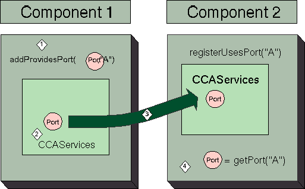<BR CLEAR=LEFT><BR><BR>
</P>
<P ALIGN=LEFT><FONT >Figure 1: Making peer-to-peer connections
in a CCA framework</FONT></P>
<P ALIGN=LEFT><BR><BR>
</P>
<P ALIGN=LEFT><BR><BR>
</P>
<P ALIGN=LEFT><BR><BR>
</P>
<P ALIGN=LEFT>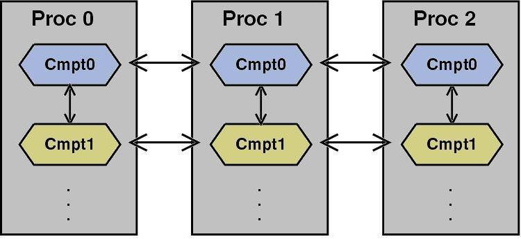<BR CLEAR=LEFT><BR><BR>
</P>
<P ALIGN=LEFT><FONT >Figure 2: Illustration of the cohort and
component interactions permitted by CCA.</FONT></P>
<P ALIGN=LEFT><BR><BR>
</P>
<P ALIGN=LEFT><BR><BR>
</P>
<P ALIGN=LEFT><BR><BR>
</P>
<P ALIGN=LEFT>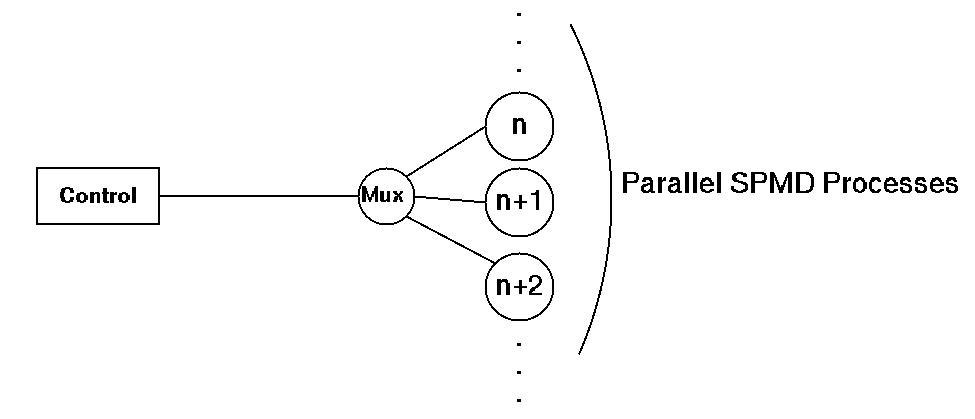<BR CLEAR=LEFT><BR><BR>
</P>
<P ALIGN=LEFT>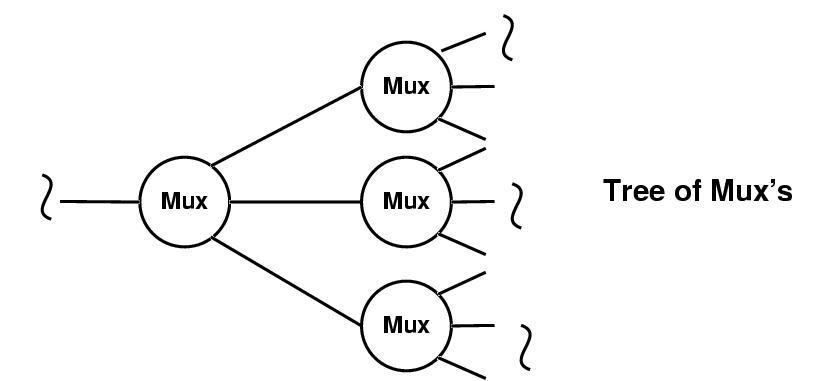<BR CLEAR=LEFT><BR><BR>
</P>
<P ALIGN=LEFT><FONT >Figure 3  Figure(a) above,  illustrates
the structure of the SPMD component framework. The MuxingProcess
connects the control program to the cohort of instances of the SPMD
framework.  Figure (b) illustrates the self-similar nature of the
MuxingProcess.</FONT></P>
<P ALIGN=LEFT><BR><BR>
</P>
<P ALIGN=LEFT><BR><BR>
</P>
<P ALIGN=LEFT>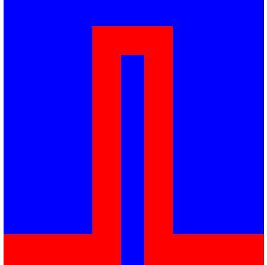<BR CLEAR=LEFT><BR><BR>
</P>
<P ALIGN=LEFT><BR><BR>
</P>
<P ALIGN=LEFT><FONT >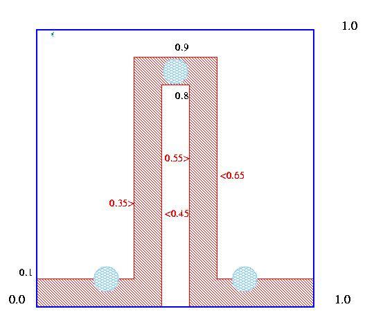<BR CLEAR=LEFT>Figure 4(a)<!-- One of these babies have to go. --> on the top plots 1 / Z,
a measure of thermal conductivity. We see a primarily non-conducting
plate with a conducting channel embedded in it. Below, Figure 4(b)
shows the initial conditions with &quot;hot-spots&quot; centered at
(0.25, 0.1), (0.5, 0.85) and (0.75, 0.1) in an (0, 1.0), (0, 1.0)
domain.</FONT></P>
<P ALIGN=LEFT><BR><BR>
</P>
<P ALIGN=LEFT><BR><BR>
</P>
<P ALIGN=LEFT>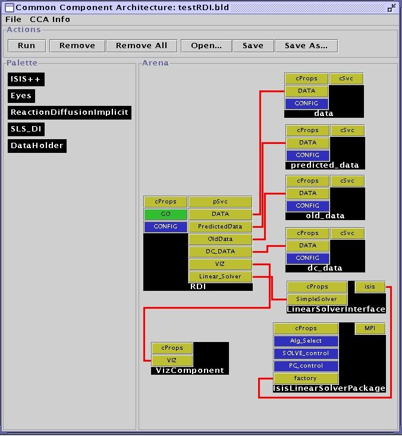<BR CLEAR=LEFT><BR><BR>
</P>
<P ALIGN=LEFT><FONT >Figure 5. A snapshot of the &quot;wiring
diagram&quot; for the reaction-diffusion code. 4 DataHolders (data,
predicted_data, old_data, dc_data) are seen connected to the
ReactionDiffusionImplicit component (RDI) along with an Eyes
Component<!-- Refer to it as "Eyes" or VizComponent but not both
Viz Component is preferred.

There is no mention in the text of two different
implementations, this is very strong and should be emphasized -->
(VizComponent). RDI solves diffusion in an implicit manner,
constructing the distributed linear system using a SLS_DI component
(LinearSolverInterface) and actually solves the system of equation
using an ISIS++ component (IsisLinearSolverPackage). The Ports
registered by each component are seen prominently and serve  as a
means of setting user-modifiable component parameters (e.g. mesh
resolution, physical and chemical constants etc.).</FONT></P>
<P ALIGN=LEFT><BR><BR>
</P>
<P ALIGN=LEFT><BR><BR>
</P>
<P ALIGN=LEFT><BR><BR>
</P>
<P ALIGN=LEFT>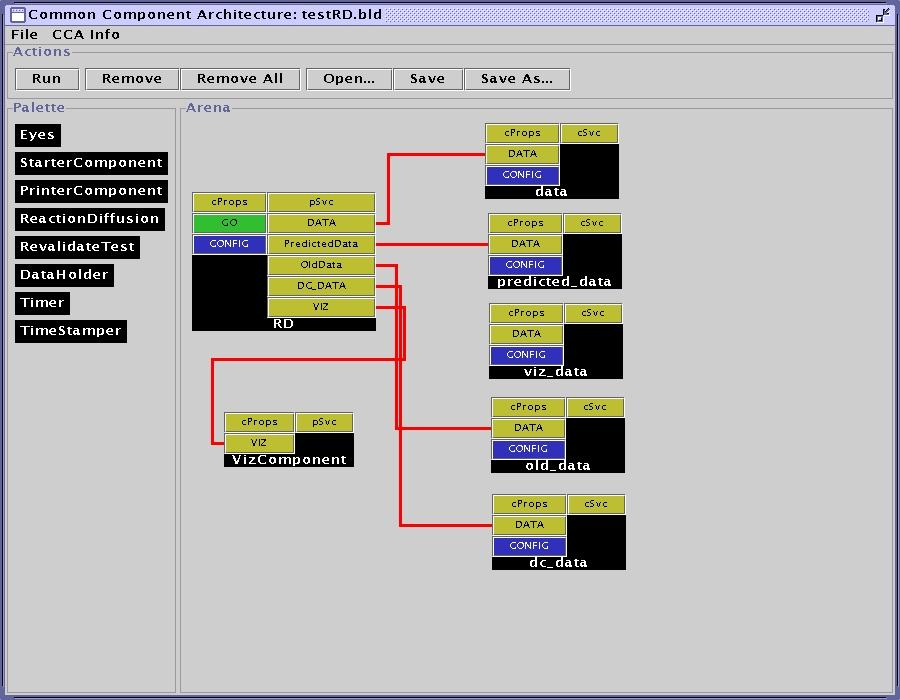<BR CLEAR=LEFT><BR><BR>
</P>
<P ALIGN=LEFT><FONT >Figure 6. Wiring diagram of the
reaction-diffusion code, implemented with a purely explicit numerical
scheme. While the actual physics component has changed (RD is of
class ReactionDiffusion, instead of ReactionDiffusionImplicit, as
shown in the previous figure), we show reuse of the DataHolder
components as well as the Eyes component. This simulation code was
tested on 32 processors on Sandia National Laboratories Cplant
cluster. This picture also shows an unused and unconnected DataHolder
(viz_data).</FONT></P>
<P ALIGN=LEFT><BR><BR>
</P>
<P ALIGN=LEFT><BR><BR>
</P>
<CENTER>
	<TABLE WIDTH=576 BORDER=0 CELLPADDING=0 CELLSPACING=0>
		<COL WIDTH=326>
		<COL WIDTH=250>
		<THEAD>
			<TR VALIGN=TOP>
				<TH WIDTH=326>
					<P>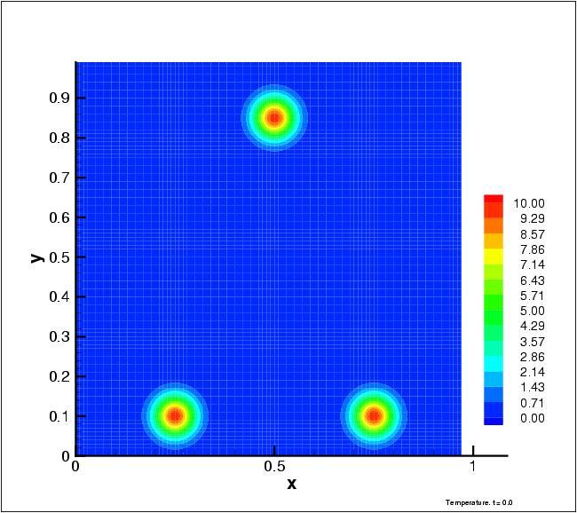<BR>
				</TH>
				<TH WIDTH=250>
					<P>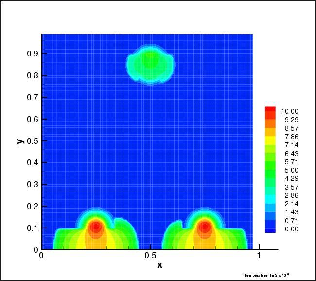<BR>
				</TH>
			</TR>
		</THEAD>
		<TBODY>
			<TR>
				<TD WIDTH=326>
					<P ALIGN=LEFT>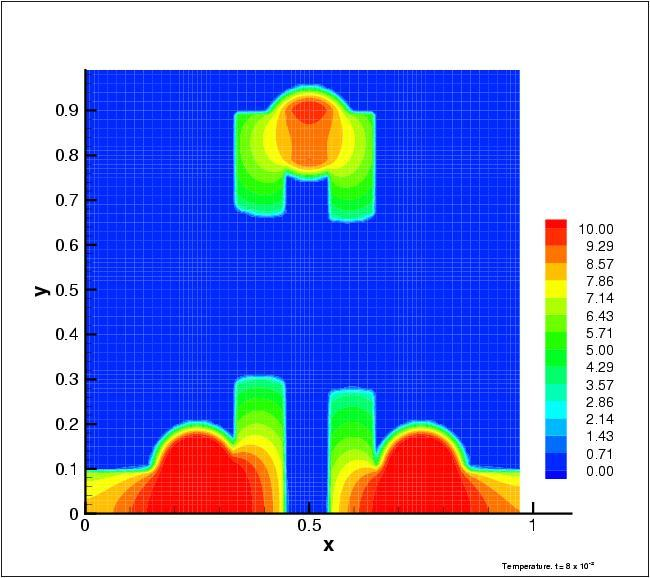<BR CLEAR=LEFT><BR>
				</TD>
				<TD WIDTH=250>
					<P ALIGN=LEFT>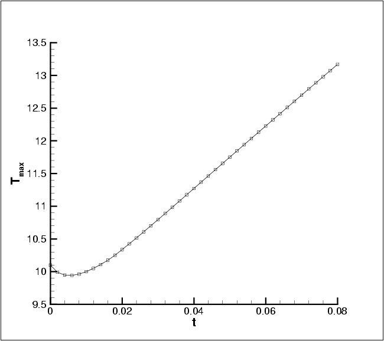<BR CLEAR=LEFT><BR>
				</TD>
			</TR>
		</TBODY>
	</TABLE>
</CENTER>
<P ALIGN=LEFT><BR><BR>
</P>
<P ALIGN=LEFT><FONT >Figure 7. <!-- Tell me which wiring diagram this belongs 
to.  Also we may only have room for one of these figures.

We should expect that in the final we will
have to have contour plots.

---- rob, 12/6/00, 2:47 AM ----
 -->Snapshots
of the temperature field at t = 0. 0.02 and 0.08 are shown in Figure
7 (a), (b) and (c). The initial conditions shows the  3 &quot;hot-spots&quot;.
In (b) we see heat diffusing through the conducting channel. This is
rapid enough that the top &quot;hot-spot&quot; actually shows a
decrease in maximum temperature compared to its state at t = 0. In
(c) we see that heat production by chemical reaction at the hot-spots
exceed transport by diffusion leading to heat and temperature
build-up. This is most dramatic in the top hot-spot which shows a net
increase in temperature. Diffusion fronts are seen to be sharp,
unlike the classical exponential decay characteristic of pure
diffusive physics. An asymmetry is also seen and is due to the coarse
resolution - this is seen to disappear  on finer meshes. In (d) we
plot the maximum temperature versus time. It is seen to dip initially
when diffusion transports energy away from the hot-spots and
thereafter rises as the exothermic reaction release heat in regions
where the temperature is sufficiently high to have non-zero reaction
rates.</FONT></P>
<P ALIGN=LEFT><BR><BR>
</P>
<P ALIGN=LEFT><BR><BR>
</P>
<P ALIGN=LEFT><BR CLEAR=LEFT><BR><BR>
</P>
<P ALIGN=LEFT><FONT >Figure 8. A screen shot of the &quot;slicer&quot;
visualization tool included with CUMULVS. Temperature data, collated
from three  processors onto one by &quot;VizComponent &quot; is shown
here. This serves as an automatic monitoring tool since the picture
is continuously updated as the simulation proceeds. Slicer is used to
view all the relevant fields (temperature and each of the species).
Note that slicer &quot;flips&quot; the picture about the horizontal
axis.</FONT></P>
<DIV ID="sdfootnote1">
	<P><FONT ><A CLASS="sdfootnotesym" NAME="sdfootnote1sym" HREF="total5_8.html#sdfootnote1anc">1</A>Corresponding
	author. Dr. R. Armstrong, MS 9217, PO Box 969, Sandia National
	Laboratories, Livermore, CA 94551-0969. Phone : 925-294-2470, Fax
	925-294-1225. Email  : Rob@ca.sandia.gov.</FONT></DIV>
<DIV TYPE=FOOTER>
	<SPACER TYPE=VERTICAL >
	<P><FONT >	<SDFIELD TYPE=PAGE SUBTYPE=RANDOM FORMAT=PAGE>30</SDFIELD></FONT>
</DIV></BODY>
</HTML>
